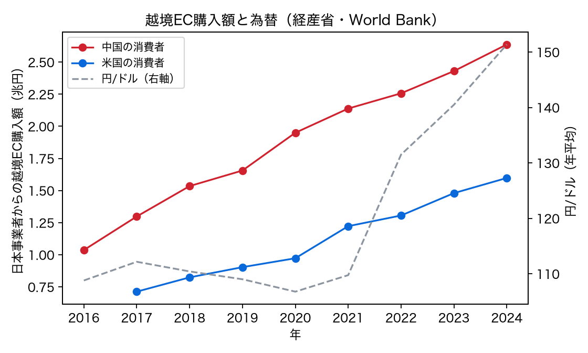
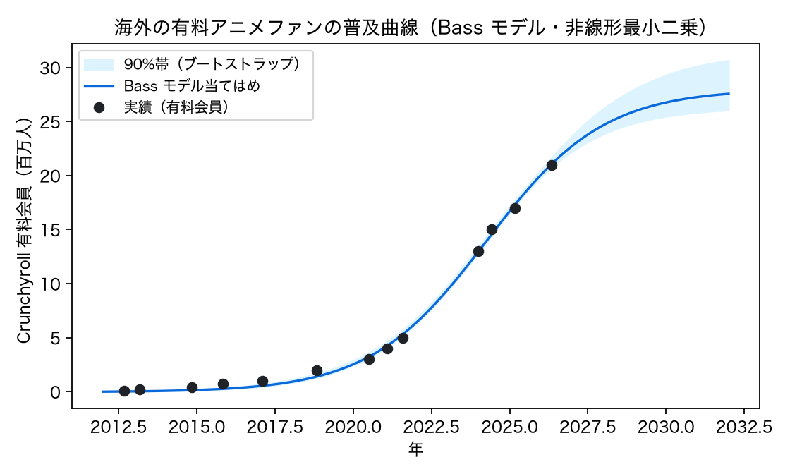
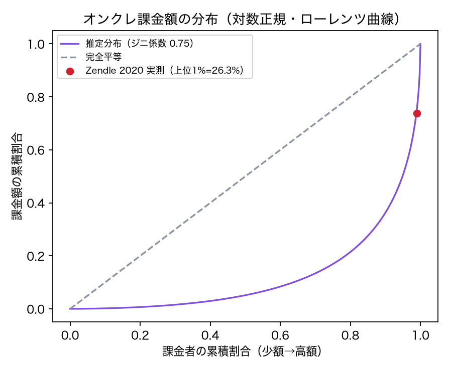
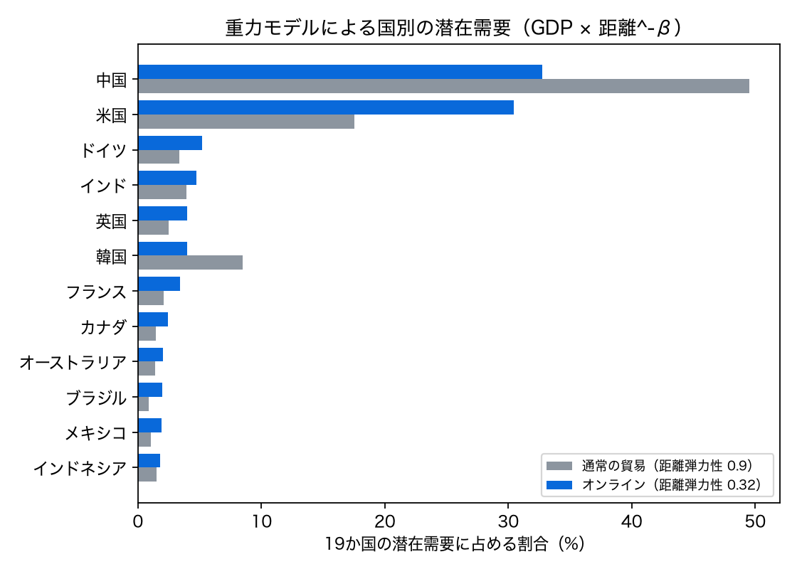
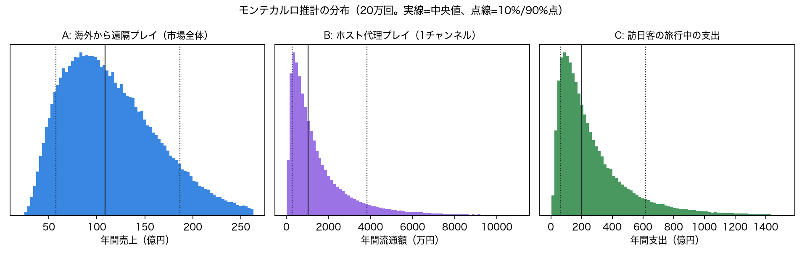
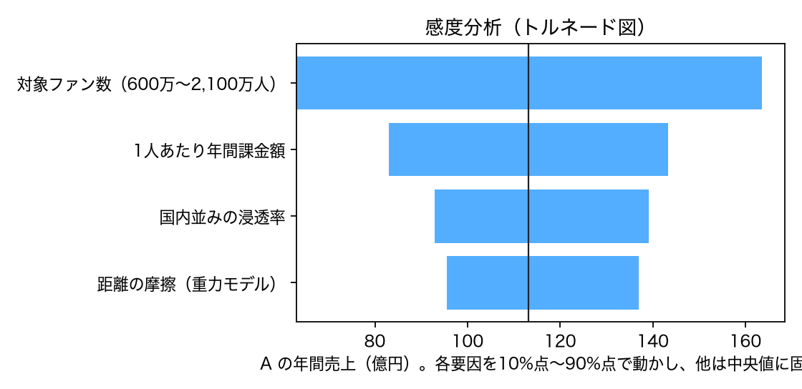
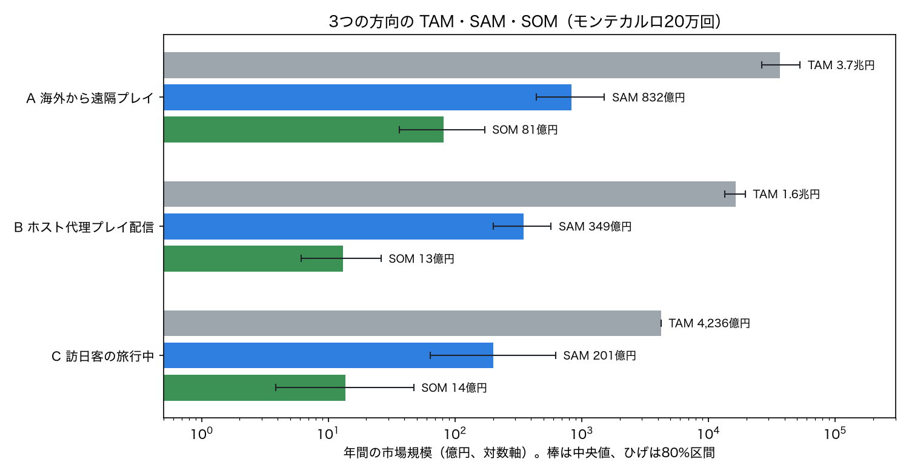
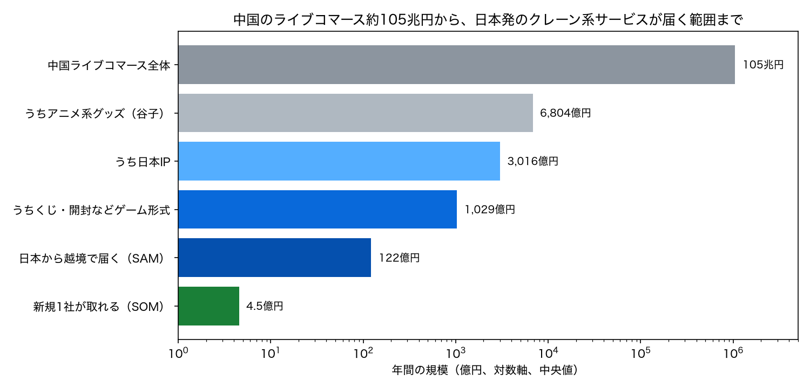

海外・訪日客向けクレーンゲームの需要推計：計量分析と文献値
「海外の人や訪日客向けのクレーンゲームに、どれくらいの需要があるか」を、経済学・マーケティング・行動研究で使われる統計手法で推計しました。使った手法は、パネル回帰による弾力性の推定、Bass 普及モデル、対数正規分布による課金額の推定、重力モデル、モンテカルロ・シミュレーション、感度分析です。パラメータは公的統計と査読論文の値から取り、仮定を置いたところは明記しています。
- 海外から遠隔で遊ぶ市場（A 案）の潜在規模は、年間 約110億円（80%区間 58〜187億円）。国内オンクレ市場（約300億円）の3分の1程度にあたる。距離の摩擦で、国内並みの浸透率の約4割まで落ちると置いた値。
- ホストが代わりにプレイする配信（B 案）は、1チャンネルあたり年間流通額 約1,000万円（80%区間 270万〜3,800万円）。プレイ代を引いた粗利は約550万円で、人件費と発送作業の前の数字。事業にするには多数のホストが要る。
- 訪日客が旅行中にクレーンゲームに使う額（C 案）は、年間 約200億円（80%区間 64〜619億円）。国内クレーンゲーム市場（3,918億円）の約5%にあたる。「訪日客の何%が遊ぶか」の統計がないため、幅が最も広い。
- 為替の影響は大きい。10%の円高で、越境購入は約13%減（点推定。信頼区間は広い）、訪日客数は7〜23%減（IMF の推定）。
- 課金は一部の人に集中する。推定分布では上位10%の課金者が売上の約64%を占める。過去の実測（上位1%で26%）とも合う。需要推計は高額課金者の仮定に強く左右され、依存症リスクへの配慮も必要になる。
- 市場を広く取ると兆円単位になる。海外の人が日本IPのグッズ・トレカに払う総額（A 案の TAM）は年 約3.7兆円、コレクタブル系のライブコマース（B 案の TAM）は年 約1.6兆円。
- 日本から届けられて、ゲーム性のある買い方に当たる部分（SAM）は、A 約830億円、B 約350億円、C 約200億円。新規の1社が3〜5年で取れる部分（SOM）は、A 約80億円、B・C 約13〜14億円。
- 7節の「約110億円」は、国内のオンクレと同じ割合で海外ファンが使うと置いて下から積んだ値で、上から絞った SAM（約830億円）の約8分の1。どちらに近いかは、海外ファンが既存の買い方（パック開封・くじ）からどれだけ乗り換えるかで決まる。
- 中国のライブコマース約105兆円（5兆元）は全品目の合計。アニメ系グッズはその約0.65%（約6,800億円）で、日本IP・ゲーム形式・越境で届く範囲まで絞ると約120億円。中国の現地パートナーと組めば約450億円まで広がる。
主な推計値
80%区間はモンテカルロ20万回の10%点〜90%点。CI は信頼区間。
目次
1. 分析の全体像
| 問い | 手法 | データ | 結果の使い道 |
|---|---|---|---|
| 円安・円高で海外の購入はどれだけ動くか | 固定効果パネル回帰（両対数、HC1 頑健標準誤差、ペア・ブートストラップ） | 経産省 越境EC（中国・米国の消費者、2016〜2024年）、World Bank 為替・1人当たり実質GDP | 為替シナリオ |
| 海外で日本IPにお金を払うファンは何人まで増えるか | Bass 普及モデル（非線形最小二乗、残差ブートストラップ） | Crunchyroll 有料会員数（2012〜2026年、13時点） | A 案の対象人数の上限 |
| 課金者1人あたりいくら使うか、どれだけ偏るか | 対数正規分布の分位点による推定、ローレンツ曲線・ジニ係数 | CGP 2026 オンクレ利用者調査、Close et al. 2021、Zendle et al. 2020 | ARPPU（課金者1人あたり売上）と集中度 |
| どの国に需要があるか | 重力モデル（GDP × 距離^-β）。β はメタ分析とオンライン貿易研究の値 | World Bank GDP 2024、首都間の大圏距離 | 国別の優先順位、A 案の距離摩擦 |
| 各方向の需要はどれくらいか | モンテカルロ・シミュレーション（20万回） | 上の推定値＋公的統計＋文献値 | A・B・C の規模と不確実性 |
| どの仮定が結果を左右するか | トルネード図（1要因ずつ10%点〜90%点で動かす） | モンテカルロの入力 | 次に何を測るべきか |
2. 文献値の一覧
| 分野 | 文献 | 手法・データ | 推定値 | 本分析での使い方 |
|---|---|---|---|---|
| 重力モデル | Disdier & Head (2008) REStat | 103本・1,467推定値のメタ分析 | 距離弾力性の平均 約0.9 | 通常の貿易の β |
| オンライン貿易 | Lendle, Olarreaga, Schropp & Vézina (2016) Economic Journal | eBay と通常貿易、61か国の重力モデル | 距離の効果が eBay では平均65%小さい（PPML で約55%）。売り手評価でさらに縮小 | オンラインの β＝0.9×(0.35〜0.45) |
| 越境EC | Gómez-Herrera, Martens & Turlea (2014) Information Economics and Policy | EU 27か国の消費者パネル、重力モデル | 言語共通の係数が 0.657（通常）→ 2.564（オンライン）。越境決済の利用1%増で越境EC最大7%増 | 英語対応・決済が需要の前提という解釈 |
| 観光需要 | IMF WP/20/169 (2020) | 34市場、1996Q1〜2018Q4、パネル ARDL | 実質1%の円安で訪日客 0.7〜2.5%増、所得弾力性 2.4〜5.3 | C 案の為替シナリオ |
| 観光需要 | 韓国→日本の観光需要モデル | 四半期データ | 円安1%で訪日 0.7%増、相対物価1%低下で2.3%増、所得弾力性1.2 | IMF 値の下限の裏付け |
| 観光需要 | Peng, Song, Crouch & Witt (2015) J. Travel Research | 195研究のメタ分析 | 所得弾力性 平均2.526、価格弾力性 平均−1.281 | 観光は所得に敏感な「ぜいたく品」という前提 |
| 普及モデル | Sultan, Farley & Lehmann (1990) JMR | 213件の Bass モデル適用のメタ分析 | p（革新係数）平均0.03、q（模倣係数）平均0.38 | Crunchyroll の推定値と比べる基準 |
| 課金の集中 | Close et al. (2021) Addictive Behaviors | ルートボックス購入者 7,771人 | 上位5%（月100ドル超）が売上の半分超。支出は所得と無相関、問題ギャンブル度と相関（ρ=.33） | 対数正規の2点目の条件 |
| 課金の集中 | Zendle et al. (2020) | CSGO の実購入 147万件・38.6万人 | 上位10%が過半、上位1%が26.33% | 推定分布の検証 |
| 課金の集中 | Games: Research and Practice (2023) | モバイルゲーム 1,350万人の取引 | 「超パレート型」では上位10%が78%、上位1%が38% | 集中度の上限の参考 |
| ライブコマース | UBC 学位論文 "Sales impact of live streaming" | アパレル167ブランド、固定効果＋コピュラ法 | ライブ動画1本追加で日次売上が中央値+22.9%。81%のブランドでプラス、4%でマイナス | ライブの上乗せ効果の目安 |
| ライブコマース | HICSS "Everyone Can Be a Star" | 淘宝、差の差分析＋傾向スコア | ライブ導入後に売上+21.8%。体験財では+27.9%上乗せ | 同上 |
| ライブコマース | SSRN "Fleeting or Lasting Success?" | アジアのライブコマース、準自然実験 | 売上効果はプラスだが配信当日だけ。続けないと残らない | B 案は配信を続けることが前提 |
| ライブコマース | SMU: What drives sales of e-commerce live streaming? | 淘宝の大規模データ | リアルタイムのコメント1%増で売上+0.29% | チャットで景品を選ばせる設計の根拠 |
| ライブコマース | McKinsey (2021) | 業界データ（因果推定ではない） | 上位アカウントの購入率28%、通常ECの最大10倍 | B 案の購入率の上限 |
| 観戦 | Sjöblom & Hamari (2017) Computers in Human Behavior | Twitch 利用者 N=1,097 | 視聴時間は緊張解放・社会的つながり・感情で増える。有料購読を予測するのは社会的つながりだけ | 「見るだけの人」をお金につなげるには交流が要るという解釈 |
市場・統計の基礎値
| 項目 | 値 | 出典 |
|---|---|---|
| 国内クレーンゲーム売上（2024年度） | 3,918億円（+17.7%） | JAIA（2026年5月公表） |
| 国内プライズゲーム売上（2024年度） | 4,177億円（施設売上の68%） | JAIA |
| 国内オンクレ市場 | 約200億円（2020年度）→ 推定約300億円（2021年度） | GameBusiness.jp、BATONZ |
| 推し活人口 | 約1,384万人 | DMM 登壇資料（GameBusiness.jp） |
| 日本アニメの海外市場（2024年） | 2兆1,702億円（+26.0%） | 日本動画協会 |
| Crunchyroll 有料会員 | 2,100万人（2026年5月） | Crunchyroll 発表 |
| 訪日客（2025年） | 4,268万人（+15.8%） | JNTO |
| 訪日消費（2025年）／うち娯楽等サービス費 | 9兆4,549億円／4,236億円（4.5%） | 観光庁 確報 |
| 娯楽等サービス費の1人あたり支出 | 10,295円 | 同上 |
| 中国・米国の消費者の日本からの越境EC（2024年） | 2兆6,372億円／1兆5,978億円 | 経済産業省 |
3. 為替と所得の弾力性（パネル回帰）
「日本の商品を海外から買う量」が円安や所得でどれだけ動くかを、経産省の越境EC統計で推定しました。中国と米国の消費者の2系列（2016〜2024年、計17観測）を使い、国ごとの水準の違いは固定効果で吸収しています。
| 係数 | M1 | M2（コロナ期ダミー付き） |
|---|---|---|
| 為替弾力性 β₁ | 0.557（SE 0.367, p=0.13） | 1.297（SE 0.385, p<0.001） |
| β₁ のブートストラップ95%CI | [−0.83, 1.35] | [−0.01, 2.27] |
| 所得弾力性 β₂ | 2.089（SE 0.349） | 1.473（SE 0.387） |
| コロナ期（2020〜21年） | — | +0.228（約+26%） |
| R²／観測数 | 0.912／17 | 0.950／17 |
読み方: M2 では、円が現地通貨に対して1%安くなると、日本からの越境購入額が約1.3%増える。所得が1%増えると約1.5%増える。
ただし、観測が17点しかなく、ブートストラップの信頼区間は0をまたぎます。「為替が効く」と断定はできません。符号と大きさは IMF の観光需要の推定（0.7〜2.5）と同じ範囲に収まっています。
標準誤差は HC1（不均一分散に頑健）。ブートストラップは観測単位の再標本化4,000回。

4. 海外ファン層の普及（Bass モデル）
海外で日本アニメにお金を払う人の数の代わりとして、Crunchyroll の有料会員数（13時点）に Bass 普及モデルを非線形最小二乗法で当てはめました。

| 上限 m | 2,800万人（95%CI 2,590万〜3,230万） |
|---|---|
| 革新係数 p | 0.0007（メタ平均 0.03） |
| 模倣係数 q | 0.537（95%CI 0.47〜0.58、メタ平均 0.38） |
| 増加のピーク | 2024年ごろ |
| 予測 | 2028年 約2,540万人、2030年 約2,700万人 |
| R² | 0.998 |
読み方: メタ分析の平均と比べ、p が非常に小さく q が大きい。広告より口コミ・周りの影響で広がるタイプです。増え方のピークは過ぎつつあり、今の形の事業では2,800万人前後で頭打ちになる見込みです。
注意: 2022年の Funimation 統合による段差を含みます。会員数は累積の加入者ではなく、その時点の会員数です。
5. 課金額の分布（対数正規・ジニ係数）
オンクレ課金者の月の課金額が対数正規分布に従うと仮定し、2つの分位点から分布を決めました。
- 条件1: 月3,000円未満が74.5%（CGP 2026 オンクレ利用者調査）
- 条件2: 上位5%の境目が月100ドル（約15,000円）（Close et al. 2021 のルートボックス研究）

| 分布 | 対数正規 μ=6.93, σ=1.63 |
|---|---|
| 月の課金額 中央値 | 約1,020円 |
| 月の課金額 平均（ARPPU） | 約3,880円（年 約4.65万円） |
| ジニ係数 | 0.752 |
| 上位1%／5%／10%の売上シェア | 24.4%／49.5%／63.7% |
検証: 推定分布の上位1%のシェア（24.4%）は、推定に使っていない Zendle et al. の実測値（26.3%）に近い値でした。
読み方: 平均は中央値の約4倍。需要の金額は少数の高額課金者で決まるため、利用者数の推計より課金額の仮定の方が結果を大きく動かします。Close et al. は、高額課金が所得ではなく問題ギャンブル度と相関すると報告しており、上限設定などの配慮が要ります。
6. 国別の潜在需要（重力モデル）
国際貿易で最もよく使われる重力モデルで、国ごとの潜在需要の配分を計算しました。需要は相手国の GDP に比例し、距離のβ乗に反比例するとします。通常の貿易の β＝0.9（Disdier & Head 2008 のメタ平均）と、オンラインの β＝0.315（Lendle et al. 2016 の「距離効果65%減」）を比べます。

| 国 | 距離 | 通常 | オンライン |
|---|---|---|---|
| 中国 | 2,093km | 49.5% | 32.7% |
| 米国 | 10,905km | 17.5% | 30.5% |
| ドイツ | 8,917km | 3.4% | 5.2% |
| インド | 5,838km | 4.0% | 4.8% |
| 英国 | 9,559km | 2.5% | 4.0% |
| 韓国 | 1,153km | 8.5% | 4.0% |
| フランス | 9,713km | 2.1% | 3.4% |
| カナダ | 10,322km | 1.4% | 2.4% |
読み方: オンラインでは距離の効果が弱まり、米国・欧州の比重が上がる。Gómez-Herrera et al. によると、オンラインでは言語の壁の影響が逆に強まるため、英語対応が前提になります。
アニメ人気や規制は入れていない単純なモデルです。国ごとの需要の相対的な重みを見るためのもの。
7. 3つの方向の需要推計（モンテカルロ）
リサーチまとめで並べた方向のうち、数字で比べやすい A・B・C の3つを推計しました。不確かな入力は分布で与え、20万回シミュレーションしています。
入力パラメータ
| 案 | パラメータ | 分布 | 根拠 |
|---|---|---|---|
| A 海外から遠隔プレイ | 対象ファン数 | 一様 600万〜2,100万人 | Buyee＋転送コムの海外会員（600万）〜 Crunchyroll 有料会員（2,100万）。Bass の上限2,800万の内側 |
| 国内並みの浸透率 | 国内オンクレ課金者 ÷ 推し活人口（中央値 4.9%） | 国内オンクレ 250〜400億円 ÷ ARPPU ÷ 1,384万人 | |
| 距離の摩擦 | (距離比)^(−β)、β 一様 0.315〜0.405、距離 3,000〜9,500km ÷ 国内500km | Disdier & Head × Lendle et al.。中央値 0.41 | |
| ARPPU（年） | 国内推定 4.65万円 × 一様0.6〜1.2 | 送料の負担で国内より下がる可能性 | |
| 式 | 売上 = 対象ファン数 × 浸透率 × 摩擦 × ARPPU | ||
| B ホスト代理プレイ（1チャンネル） | 月の配信回数 | 整数一様 8〜16回 | 週2〜4回 |
| 1配信の視聴者数 | 対数正規 中央値300（σ=0.9） | 個人配信の規模。上位の動画は200万回（CDawgVA） | |
| 購入率 | 三角 1%・4%・10% | 通常EC 2〜3% 〜 ライブ上位28%（McKinsey）。ライブの上乗せ +22%（UBC、HICSS） | |
| 1注文の売上 | 三角 3,000・5,000・8,000円 | 景品（国内上限 約1,000円相当）＋代行・演出料。送料別 | |
| 1個取るのにかかるプレイ代 | 三角 1,000・2,000・4,000円 | Reddit・渋谷取材の獲得コスト | |
| 式 | 流通額 = 配信回数 × 12 × 視聴者 × 購入率 × 客単価。粗利 = 注文数 × (客単価 − プレイ代) | ||
| C 訪日客の旅行中 | 訪日客数 | 4,268万人（2025年） | JNTO |
| クレーンで遊ぶ割合 | 一様 5〜20% | 公的統計なし（仮定）。渋谷・道頓堀の取材から | |
| 1人の支出 | 対数正規 中央値4,000円（σ=0.8） | 渋谷取材 2,000〜20,000円 | |
| 上限 | 娯楽等サービス費の総額 4,236億円を超えないように制約 | ||

結果
| 案 | 指標 | 10%点 | 中央値 | 90%点 | 比較の目安 |
|---|---|---|---|---|---|
| A | 年間売上（市場全体） | 57.6億円 | 108.6億円 | 186.7億円 | 国内オンクレ約300億円の約1/3 |
| A | 課金ユーザー数 | 14.6万人 | 26.7万人 | 42.6万人 | 対象ファンの約2% |
| B | 年間注文数（1チャンネル） | 532件 | 1,976件 | 7,134件 | 1日あたり約5件（中央値） |
| B | 年間流通額（1チャンネル） | 272万円 | 1,034万円 | 3,828万円 | — |
| B | 年間粗利（プレイ代控除後） | 123万円 | 545万円 | 2,214万円 | 人件費・梱包作業の前 |
| C | 年間支出 | 63.6億円 | 201.6億円 | 618.7億円 | 国内クレーン市場の約5%（1.6〜15.8%） |
A は「市場全体の潜在規模」を下から積んだ値。1社が取れるのはその一部で、たとえばシェア10%なら中央値で約11億円。上から絞った推計との比較は 9節。
8. 感度分析と為替シナリオ

A 案で結果を最も動かすのは「対象ファン数」（63億〜164億円）。次いで ARPPU、浸透率、距離の摩擦の順。
→ 最初に確かめるべきは、「海外の日本IPファンのうち、オンクレに興味を持つのは誰で、何人いるか」。
為替シナリオ（10%の円高）
| A: 越境購入 | 約−12.8% | 本分析 M2 の弾力性 1.30（信頼区間は広い） |
|---|---|---|
| C: 訪日客数 | −7.1〜−23.2% | IMF の弾力性 0.7〜2.5 |
足元の円安（2024年 151円/ドル）は A・C の両方に追い風。逆に円高に戻ると両方に同時に逆風になるため、A と C は為替のリスクで分散できない。B は仕入れが円・販売が外貨なので、円高で利幅が縮む。
9. TAM・SAM・SOM
7節は「海外ファンが国内と同じ割合でオンクレを使う」と置いて下から積んだ推計でした。ここでは逆に、すでに払われているお金を上から絞り込み、市場の広さを3段で出します。各段の係数は一様分布・三角分布で幅を持たせ、モンテカルロで20万回まわしました（為替は 150円/ドル、21円/元）。
| 段 | この分析での定義 |
|---|---|
| TAM（最大の市場） | チャネルや遊び方を問わず、その方向が対象にする消費者が払っている総額 |
| SAM（届けられる市場） | そのうち「ゲーム性のある買い方（クレーン・くじ・パック開封など）」で、かつ「日本から届けられる／日本で遊べる」部分 |
| SOM（取れる市場） | 新規参入の1社が3〜5年で取れる部分 |
結果

| 方向 | TAM | SAM | SOM（1社） | 下から積んだ値との突き合わせ |
|---|---|---|---|---|
| A 海外から遠隔プレイ | 3.7兆円 2.7〜5.3兆 | 832億円 439〜1,516億 | 81億円 36〜171億 | 7節の市場全体 109億円は、SAM と SOM の間 |
| B ホスト代理プレイ配信 | 1.6兆円 1.4〜2.0兆 | 349億円 202〜574億 | 13億円 6〜26億 | 1チャンネル年1,030万円 × 5〜30チャンネルでは 1.6億円（0.4〜6.9億）。13億円に届くには100チャンネル規模が要る |
| C 訪日客の旅行中 | 4,236億円 | 201億円 64〜623億 | 14億円 4〜47億 | SAM は7節の C と同じ推計 |
A と B は同じ海外ファンを別の形で狙うため、SAM を足し合わせると重複する。2030年の TAM は、文献の成長率で伸ばすと A 約5.5兆円、B 約4.3兆円（米国ライブコマースの CAGR 15〜37% が効く）。
各段の係数と根拠
| 方向 | 段 | 置いた値 | 根拠 |
|---|---|---|---|
| A | TAM | 世界のアニメグッズ 98〜324億ドル ＋ 日本以外の TCG（約110億ドル）× 日本IP比率 50〜70% | グッズは調査会社で3倍の幅（Persistence 98億、Research and Markets 112億、Marketintelo 324億ドル）。TCG は世界 128〜133億ドル（Dataintelo、Mordor）から日本 2,863億円を引いた |
| ゲーム性の割合 | 10〜23% | 国内の目安: プライズ 4,178億 ÷ キャラクタービジネス 2兆7,773億 = 15%、トレカを足すと 23%（JAIA、矢野経済研究所） | |
| 日本から届く割合 | 10〜30% | 越境EC は国内EC より小さい。中国は現地販売の壁で特に低い（仮定） | |
| 規制・決済が通る国 | 60〜85% | 景品規制・賭博の定義は国で違う（仮定） | |
| 1社のシェア | 3〜20%（最頻 8%） | 国内オンクレは約30社（GameBusiness.jp） | |
| B | TAM（北米・欧州） | ライブコマース 146〜220億ドル × コレクタブル・トレカ・玩具 25〜45% | 米国 146億ドル（eMarketer 2025）、北米＋欧州 約220億ドル（Whatnot 2026年報告）。Whatnot は流通額80億ドルで、スポーツカードと TCG が上位2カテゴリ |
| TAM（中国） | 谷子 2,021億元 × ネット比率 40〜60% × うちライブ 25〜40% | 谷子経済 2025年 2,021億元（艾媒咨詢）。ライブはネット小売の約3分の1（商務部研究院） | |
| 日本IP比率 | 北米欧州 25〜45%、中国 30〜60% | 米国はスポーツカードが最大。中国は国産IPが伸びている（仮定） | |
| ゲーム形式・届く割合 | ゲーム形式 20〜50%、日本発で満たせる 10〜30%、中国に越境で届く 5〜20%（現地パートナーありなら 30〜60%） | ブレイク・開封・くじの比重（Whatnot の報告）。届く割合は仮定 | |
| 1社のシェア | 1〜8%（最頻 3%） | プラットフォームではなく出品者・運営者として参入する前提 | |
| C | TAM | 訪日消費のうち娯楽等サービス費 4,236億円 | 観光庁 2025年確報 |
| 1社のシェア | 2〜15%（最頻 5%） | 訪日客向けの新店舗、または旅の前後にオンラインで遊ばせる形（仮定） |
中国のライブコマース約100兆円との関係

中国のライブコマースは2025年に5兆元超（約105兆円）で、ネット小売の約3分の1を占めます（商務部研究院、網経社は 6.95兆元）。数字は正しいのですが、ここから日本発のクレーン系サービスが届く範囲までは、次の順で大きく縮みます。
- 全品目の合計である。服・化粧品・食品が中心で、アニメ系グッズ（谷子）のライブ販売は約6,800億円、全体の約0.65%。
- 中国の谷子は国産IPが伸びている。日本IPに絞ると約3,000億円。
- くじ・開封などゲーム形式に絞ると約1,000億円。
- 中国国内のライブ販売は、現地の店舗・決済・物流が前提。日本から越境で届く部分に絞ると約120億円（SAM）。新規1社なら約4.5億円（SOM）。
上振れの条件は、中国の現地パートナーと組むこと。届く割合を 30〜60% にすると、SAM は約450億円（257〜772億）、1社の SOM は約17億円になります。
参考: 中国では2017年末に在線抓娃娃（オンラインクレーン）のアプリが30以上出ましたが、全体の週次アクティブは最大約123万人（モバイル利用者の約0.1%）、7日継続率は10%未満で、定着しませんでした（猎豹大数据の集計を引用した報道）。形式そのものの浸透には天井がありうる、という下から積んだ推計側の根拠になります。
下から積んだ値（約110億円）と上から絞った値（約830億円）がずれる理由
| 下から積む（7節） | 上から絞る（この節） | |
|---|---|---|
| 置いている仮定 | 海外ファンは、国内の推し活層と同じ割合（約4.9%）でオンクレに課金する。そこに距離の摩擦（約0.4倍）がかかる | 海外ファンが日本IPに使うお金のうち、ゲーム性のある買い方（10〜23%）で日本から届く部分（10〜30%）は、オンクレで置き換えられる |
| 過小になりやすい点 | 米国のブレイクや開封配信のように、海外ではすでにゲーム性のある買い方が大きい | — |
| 過大になりやすい点 | — | パック開封やくじの人が、クレーンという形式に乗り換えるとは限らない。中国の在線抓娃娃は定着しなかった |
真の値は両者の間にあると考えるのが自然です。どちらに近いかは「海外ファンが既存の買い方からオンクレにどれだけ乗り換えるか」で決まり、これは11節のコンジョイント分析や試験配信で直接測れます。
10. 解釈（比較・未決定）
どれかを推すものではありません。推計から読める各案の性格を並べます。
| 案 | 規模の目安 | 不確実性 | 推計から読めること | 最初に測るべきこと |
|---|---|---|---|---|
| A 海外から遠隔プレイ | SAM 約830億円、1社 約80億円（下から積むと市場全体で約110億円） | 中（80%区間で約3倍の幅） | 国内オンクレの3分の1程度の潜在市場がありうる。米国・欧州の比重が大きく、英語対応と国際決済が前提 | 海外ファンの利用意向と、送料込みで払える額（コンジョイント分析や価格感度テスト） |
| B ホスト代理プレイ配信 | SAM 約350億円、1社 約13億円（1チャンネルでは年1,000万円前後） | 大（80%区間で約14倍の幅） | 1人の配信者の副業〜小規模事業の規模。広げるにはホストを何人も抱えるか、店舗と組む必要がある。ライブの効果は配信当日だけ（SSRN）なので、続けることが条件 | 数回の試験配信での視聴者数と購入率 |
| C 訪日客の旅行中 | SAM 約200億円、1社 約14億円 | 最大（80%区間で約10倍の幅） | 金額は大きいが、実店舗がすでに取っている需要。オンラインが取れるのは旅の前後の練習・続きの部分 | 訪日客のゲーセン利用率（公的統計がない。店舗データか調査が必要） |
共通して言えるのは次の3点です。
- 課金は一部の人に集中する（上位10%で約64%）。高額課金者の扱い（上限・年齢確認）が売上と社会的な受け止めの両方を左右する。
- 海外ファン層の伸びは鈍り始めている（Bass のピークが2024年ごろ）。「これから急増する市場」ではなく、既にいるファンの取り合いになる。
- 為替への依存が大きい。円安の追い風を前提にしない計画が必要。
- パネル回帰は17観測と少なく、為替弾力性の信頼区間は0をまたぐ。越境EC統計は推計値で、商品カテゴリ別ではない
- Crunchyroll の会員数は「海外で日本IPにお金を払う人」の代わりにすぎない。統合による段差もある
- 課金額の分布の2点目は、オンクレではなくルートボックスの研究から借りている
- 「訪日客の何%がクレーンで遊ぶか」「海外ファンの何%がオンクレを使うか」の直接データはなく、仮定で置いた
- 国際送料・関税・国ごとの景品規制・決済手数料は A・B の式に明示的には入れていない（摩擦係数に含めた扱い）
精度を上げるための一次データ（案）
- 海外ファン向けアンケートでのコンジョイント分析：景品の種類・送料・1プレイの価格・言語への支払意思額を推定する
- Van Westendorp の価格感度測定：1プレイ・送料の許容範囲を把握する
- B 案の小規模なフィールド実験：試験配信を数回行い、視聴者数・購入率・粗利を実測し、モンテカルロの分布を事後分布で更新する（ベイズ更新）
- 店舗データ：訪日客比率の高い店の売上とプレイ単価から、C 案の遊ぶ割合と支出を推定する
12. 出典
論文・研究
- Bass, F. M. (1969). A new product growth for model consumer durables. Management Science, 15(5), 215–227. doi:10.1287/mnsc.15.5.215
- Close, J., Spicer, S. G., Nicklin, L. L., Uther, M., Lloyd, J., & Lloyd, H. (2021). Secondary analysis of loot box data: Are high-spending "whales" wealthy gamers or problem gamblers? Addictive Behaviors. ScienceDirect
- Disdier, A.-C., & Head, K. (2008). The puzzling persistence of the distance effect on bilateral trade. Review of Economics and Statistics, 90(1), 37–48. doi:10.1162/rest.90.1.37
- Gómez-Herrera, E., Martens, B., & Turlea, G. (2014). The drivers and impediments for cross-border e-commerce in the EU. Information Economics and Policy, 28, 83–96. doi:10.1016/j.infoecopol.2014.05.002
- IMF (2020). Japan's Inbound Tourism Boom: Lessons for its Post-COVID-19 Revival. WP/20/169. doi:10.5089/9781513553207.001
- Lendle, A., Olarreaga, M., Schropp, S., & Vézina, P.-L. (2016). There goes gravity: eBay and the death of distance. Economic Journal, 126(591), 406–441. doi:10.1111/ecoj.12286
- Peng, B., Song, H., Crouch, G. I., & Witt, S. F. (2015). A meta-analysis of international tourism demand elasticities. Journal of Travel Research, 54(5), 611–633. doi:10.1177/0047287514528283
- Role of tourism price in attracting international tourists: The case of Japanese inbound tourism from South Korea. PMC7185866
- Sjöblom, M., & Hamari, J. (2017). Why do people watch others play video games? Computers in Human Behavior, 75, 985–996. doi:10.1016/j.chb.2016.10.019
- Sultan, F., Farley, J. U., & Lehmann, D. R. (1990). A meta-analysis of applications of diffusion models. Journal of Marketing Research, 27(1), 70–77. doi:10.1177/002224379002700107
- Zendle, D., et al. (2020). How do loot boxes make money? An analysis of a very large dataset of real Chinese CSGO loot box openings. doi:10.31234/osf.io/5k2sy
- The Many Faces of Monetisation (2023). Games: Research and Practice. doi:10.1145/3582927
- Sales impact of live streaming（UBC 学位論文）. UBC Open Collections
- Everyone Can Be a Star: Quantifying Grassroots Online Sellers' Live Streaming Effects on Product Sales（HICSS）. PDF
- Fleeting or Lasting Success? Unlocking the Power Durability of Live Commerce. SSRN 5018972
- What drives sales of e-commerce live streaming? Evidence from Taobao（SMU）. PDF
- Live Commerce: Understanding How Live Streaming Influences Sales and Reviews（ICIS 2020）. AISeL
- McKinsey (2021). It's showtime! How live commerce is transforming the shopping experience. McKinsey
統計・データ
- 経済産業省「電子商取引に関する市場調査」各年版（令和6年度、令和4年度 ほか）
- World Bank Open Data（PA.NUS.FCRF 為替、NY.GDP.PCAP.KD 1人当たり実質GDP、NY.GDP.MKTP.CD GDP）
- JAIA 日本アミューズメント産業協会（メディアのみなさまへ）、2024年度クレーンゲーム売上3,918億円の報道
- 観光庁「訪日外国人消費動向調査 2025年暦年 確報」（PDF）、JNTO「訪日外客数」（2025年12月推計値）
- 日本動画協会「アニメ産業レポート2025」速報（発表）
- Crunchyroll 有料会員数（Statista、2026年5月発表）
- BEENOS（海外ユーザー600万人突破）
- 合同会社CGP「2026年版オンラインクレーンゲーム利用者調査」（2026年8月、n=94）
- 国内オンクレ市場（GameBusiness.jp、BATONZ、@DIME）
統計・データ（9節 TAM・SAM・SOM）
- 中国ライブコマース 2025年 5兆元超（商務部国際貿易経済合作研究院、央視財経の報道）、6兆9,461億元（網経社）、2024年 約5.8兆元（艾瑞咨詢、広州市商務局）
- 中国 谷子経済 2025年 2,021億元、泛二次元ユーザー 5.26億人（艾媒咨詢、解説、推移）
- 米国ライブコマース 2025年 146.4億ドル（eMarketer、集計記事）、世界 1,729億ドル（Grand View Research）
- Whatnot 2025年 流通額80億ドル超、2026 State of Live Selling Report（cllct / Yahoo Sports、Sacra）
- 世界のアニメグッズ市場（Persistence、Research and Markets、Marketintelo）
- 世界の TCG 市場（Dataintelo、Mordor Intelligence）、ポケモン 2025年 小売157億ドル（報道）
- キャラクタービジネス市場 2024年度 2兆7,773億円（矢野経済研究所、プレスリリース）、プライズゲーム 4,178億円（JAIA、Amusement Japan）
- 中国の在線抓娃娃 2017年（人人都是产品经理、界面新聞）、トレバ 60か国・約1,500万ユーザー（M&Aクラウド）
再現用のコード（Python、乱数の種を固定）は、チームのリポジトリの day2/demand-analysis/analysis.py にあり、実行すると results.json と図を出力します。9節は同じフォルダの tam_sam_som.py（出力は tam_sam_som.json）。